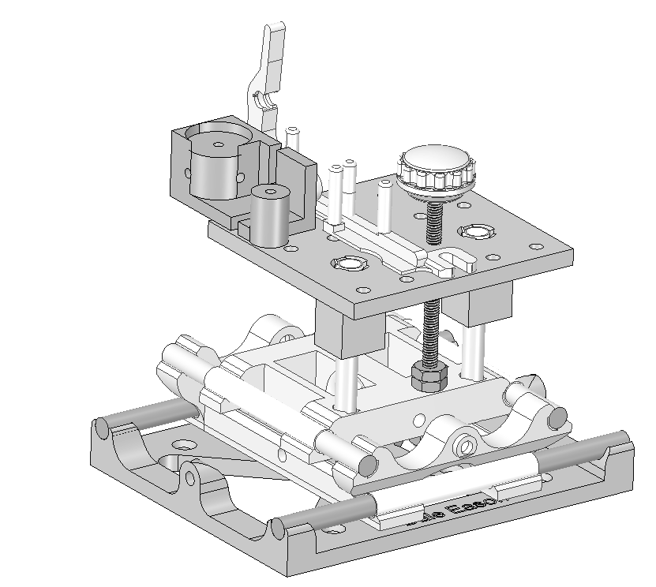

|
|
Bath Interferometer Kit($40 to $195) |
|
|---|---|
|  | |
Dale Eason designed both the interferometer and the XYZ table and then I have made small changes over the years including changing this design slightly to fit M3 screws so all the screws are the same. If you have a 3d printer, feel free to contact me for absolute latest STL files. I update thingiverse occasionally with minor improvements.
Optical parts you will need (you only need one each laser, splitter, flat, diverger but I list multiple sources)
The diameter of the lens can be quite small as the beam passing through it is typically 2mm at the most. I recommend 5mm to 10mm.
By the way the quality of the green coverage in this image has tons of noise in it and in this case it almost all came from the laser but some also from the diverger and splitter. diverging lenses and especially splitters are easy to clean and often just need a puff of air. Lasers however usually need to be disassembled and many laser types have plastic lenses that scratch when assembled.
The lens should be biconvex (BCX) (spherical both sides). Avoid planoconvex (aka PCX) which will add spherical abberation for lenses shorter than around F/8 (PCX actually isn't so bad - it may introduce spherical aberration but if you flip the lens around it will introduce the same amount in the opposite sign so if you only have a PCX make sure to test both ways to see how much S.A. changes). The lens can be the cheapest glass (typically N-BK7, N-SF5 but there are dozens of others). The lens does not need to be aspheric and can even be a well polished sphere (ball lens). You do not need coatings (they won't hurt - even if they are designed for non-visible light they will just dim the light a bit). You do not need doublets because you will only be using one color at a time (normal lenses focus different colors at a slightly different focal point creating rainbow patterns). Avoid achromats! Actually achromats may work fine - I don't know.
Avoid molded lenses. Avoid plastic lenses. Avoid lenses meant to be used to focus an LED. Avoid "condenser" lenses which are designed to focus light roughly on a slide in a slide projector (or similar) and are not necessarily accurate.
Here are good choices. Try to pick the longest focal length lens that works with your mirror F/# to get a bright beam.
| focal length | price | diameter | Approx Min. F/# | part number |
|---|---|---|---|---|
| 9mm | $25.50 | 6mm | F/3.6 | Edmund Optics #32-020 |
| 10mm | $22.75 | 6mm | F/4 | Thorlabs LB1157 |
| 10mm | $4.50 | 7mm | F/4 | Surplus Shed L8344 (this is 9.8mm F.L., not 6mm as advertised - most of the focal lengths under 20mm are wrong at surplus shed) This is DCX, not BCX but the curves are similar and close enough for very high accuracy |
| 12mm | $25.50 | 6mm | F/4.8 | Edmund Optics #32-964 |
| 18mm | $25.50 | 6mm | F/7 | Edmund Optics #32-966 |
| 30mm | $25.50 | 6mm | F/13 | Edmund Optics #45-133 |
| PCX focal length mm |
| Mirror F/# |
| S.A. added to your DFTFringe Z8 term: (if the flat side faces the splitter and curved side faces the mirror your S.A. term will be less negative (more positive). In other words it will make a parabolic mirror appear to be more undercorrected in DFTFringe. If the PCX plano side faces the mirror then it will subtract from Z8 term (make the mirror look more overcorrected in DFTFringe). |
You want the focal length of the camera lens to be 8X to 25X the f/# of the mirror under test (e.g. F/4 mirror under test is best when tested using 32mm to 100mm lens). F/2 lenses (or even wider) are ideal.
Feel free to email me with questions/issues/problems.
{kind=link}
{kind=link}